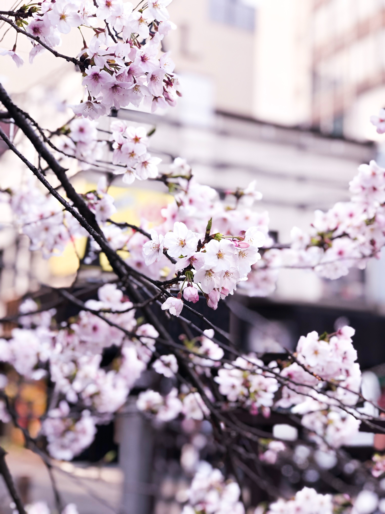
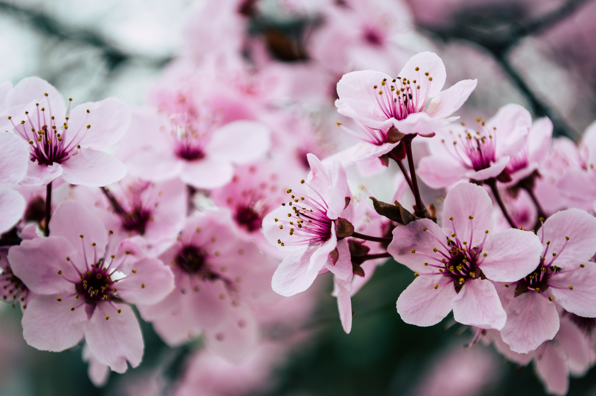

Blossoms as symbols
In general, sakura, cherry blossoms, represent the impermanent nature of life. Not only is the beauty of the flowers short and sweet, the trees themselves are also short-lived. But there are contradictory meanings as well. Cherry blossoms symbolize both birth and death, beauty and violence. They are a central motif in the Japanese worship of nature, but they have also historically signified the short but colorful life of the samurai. Sakura emblems also adorned the planes of kamikaze pilots during World War II.
Sakura of the 16th day (Samurai Sakura)
The ancient Yo-roku sakura is the cherry blossom that blooms on the sixteenth day of the first month of the lunar calendar in February. The soul of a samurai lives in that tree. Once, a sakura tree grew in his garden and bloomed at the usual time. He played under the tree as a child and knew that his parents and all his ancestors played there too. As he grew, he found that he outlived his children and the only thing that remained dear to him in the world was that sakura tree. The following summer, the tree began to wither before dying. The old samurai fell ill with grief; nothing could compensate for his loss. On the sixteenth day of the first moon, he went out into the garden, bowed to the dry trunk and pleaded: "I beg you, take my life and start blooming again!" Then, spreading a white cover under the tree, he sat down in a ritual pose and ended his life. As he died, his soul moved into the tree and it instantly bloomed. So it happened - the sakura blooming every year, on the sixteenth day of the first lunar month, during the snow season.
Rocks & Petals
The mountain deity Oho-yama had two daughters - the elder Iwa (Rock) and the younger Saku (Blooming). One day, the deity Ninigi descended from heaven to marry one of the daughters. Ninigi chose the younger one. He called the older one ugly and sent her to her father. Oho-yama became angry and announced a sentence: the life of all of the descendants of Iwa would be solid and eternal, like rocks; the descendants of Saku, though, from the Emperor to the most common person, would be as short as a spring bloom. When Saku died, a beautiful tree grew on her grave, which was named 'Sakura'.

The Pink Flowers (Innocent Victims)
Sakuras' flowers come in many different colors: pink, white, red -- in varying degrees; this is the legend of the pink flower. On the orders of a cruel ruler, a woman with children was tied to a tree trunk and flogged to death. The pink rose petals of the sakura tree became reminders of innocent victims...